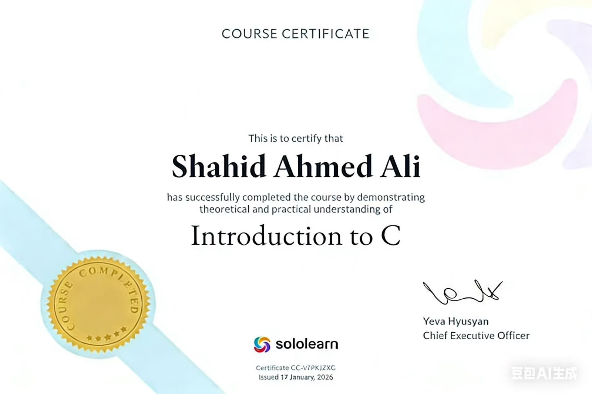

Throughout last semester, I actively practiced my C programming skills on HackerRank, which is one of the most popular and professional online coding platforms for students and developers. HackerRank provided me with structured learning paths, daily coding challenges, skill tests, and hands-on problem-solving exercises that greatly improved my programming logic and accuracy. I started from very basic beginner problems such as input and output operations, variable printing, and simple mathematical calculations. After completing the basic level problems, I moved on to intermediate challenges involving conditional logic, loops, arrays, strings, and functional programming. Every problem on HackerRank requires the user to write clean, correct, and efficient code that passes multiple test cases, which trained me to write error-free programs and debug my own mistakes independently. During my practice journey on HackerRank, I earned multiple official skill badges that verify my proficiency in core programming areas such as problem-solving, basic C syntax, mathematics for programming, and logical thinking. These badges represent consistent practice, discipline, and improvement throughout my learning period. After finishing all required modules and solving dozens of coding problems, I successfully completed the official HackerRank C Programming certification test. This certification is internationally recognized and proves that I have solid fundamental knowledge of the C programming language, including syntax, logic building, code structure, and problem-solving techniques. Completing HackerRank coursework significantly supported my university studies because it allowed me to practice outside classroom lectures, strengthen my weak points, and prepare perfectly for my semester exams and practical assessments. The certificate displayed below is official proof of all my hard work, consistent practice, and technical skill development on the HackerRank platform
Sololearn was another major online learning platform I used extensively last semester to improve and master my C programming knowledge. Sololearn offers highly structured student-friendly courses that explain every programming concept step-by-step with simple language, visual examples, mini-quizzes, and practical coding exercises. I started the complete C Programming course from the very beginning to reinforce everything I learned in university classes. The course covered every topic in detail including basic syntax, variables, data types, operators, conditional statements, loops, functions, arrays, strings, pointers, structures, and file handling. Each lesson contained reading material, example codes, and small practice tasks that helped me understand concepts clearly before moving forward. After every chapter, I completed quizzes to test my understanding and fix any confusion I had about specific topics. Whenever I faced difficulty understanding complex concepts like pointers or memory management, Sololearn’s simple explanations helped me learn faster than textbook study alone. I spent many hours practicing coding directly inside the Sololearn code editor, writing programs repeatedly until I fully mastered each topic. After completing all chapters, all quizzes, and all practical exercises in the entire C programming course, I took the final official Sololearn certification exam. I passed the exam successfully and earned my official Sololearn C Programming certificate. This certificate verifies my complete understanding of C programming fundamentals and intermediate concepts. Sololearn’s learning system greatly improved my programming speed, accuracy, and confidence. It complemented my university coursework perfectly and allowed me to become a stronger programming student overall. All the practice I completed on Sololearn directly improved my class performance, practical lab work, and my ability to write clean, structured, and correct C programs for my semester projects.

Overall, my C programming learning experience last semester was extremely valuable and productive. I started the semester with very basic programming knowledge and now I am able to understand logic building, write functional programs, solve coding problems, and complete structured programming projects independently. Practicing on both HackerRank and Sololearn helped me improve far beyond regular classroom learning and gave me real practical coding experience. I learned the importance of patience, practice, debugging, and code organization. This course built a strong foundation for my future programming subjects including web development, software engineering, and advanced coding languages. I feel more confident in my technical skills and I will continue practicing coding every day to improve further in the coming